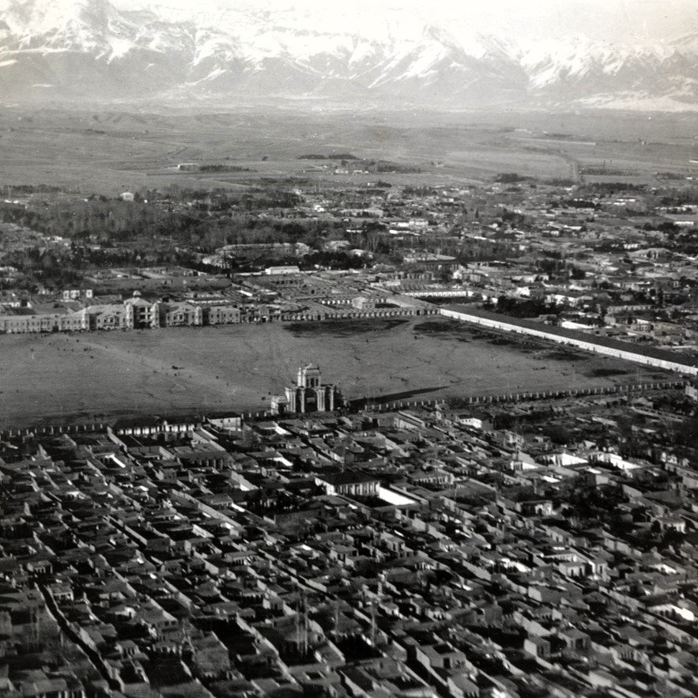
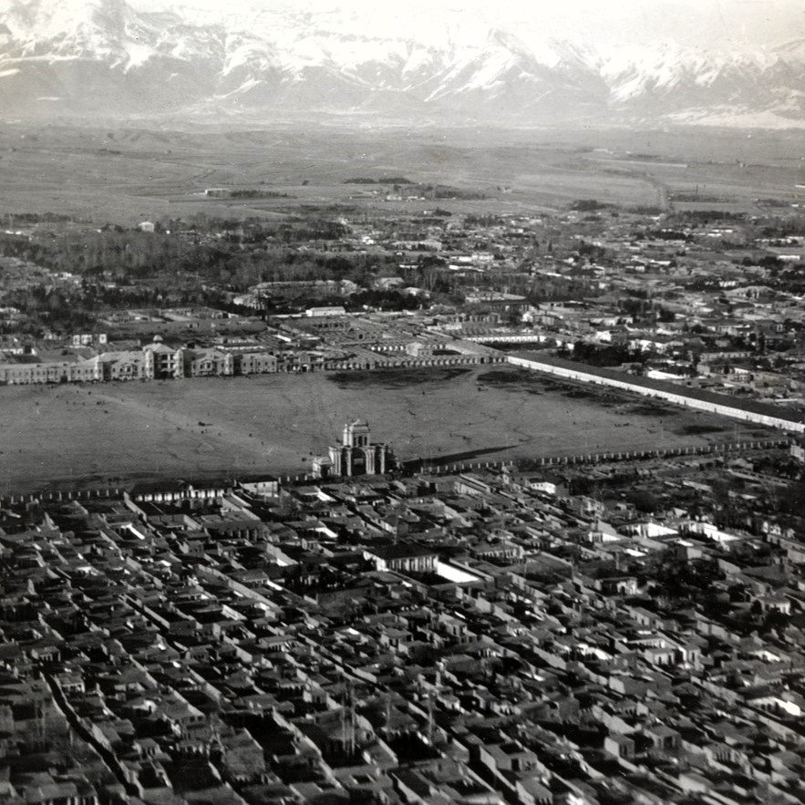

Author
My name is Pooriya, and I've spent nearly 30 years living in various neighborhoods across Tehran.
Life in a city with four distinct seasons, where ancient history and modernity blend seamlessly, has been an incredible experience.
From the majestic view of Mount Damavand and the serene Chitgar Lake to the traditional old houses and towering modern skyscrapers,
from the vibrant and lively nights to the warmth of its kind-hearted people and the amazing food in its countless cool cafes and restaurants,
Tehran has left me with beautiful memories that I'll cherish forever.
History
Tehran, the capital of Iran and the heart of Tehran Province, is nestled in the north-central part of the country at the foot of the majestic Alborz mountain range.
Since Agha Mohammad Khan of the Qajar dynasty declared it the capital over 200 years ago, Tehran has transformed from a modest town into a sprawling metropolis,
now part of an urban region that houses nearly 14 million people. Its dramatic topography,
with views of the towering Mount Damavand—the highest peak in Iran—serves as a natural backdrop that symbolizes Tehran's prominence as the country's gateway to the world.
The city's modern identity took shape in the late 20th century, shaped in part by the Iranian Revolution of the late 1970s.
Global media at the time depicted Tehran as a deeply traditional, religious city, resisting the forces of modernization and Westernization. However, this portrayal only scratched the surface.
While Iran has a history that stretches back thousands of years, Tehran itself is relatively young in comparison. Much of the city's architecture and infrastructure was built after the mid-1960s,
and the average age of its population is just over 31, giving it a youthful, energetic character.
Tehran's growth reflects a paradox: it challenges the image of Iran as a purely ancient land. While it preserves the legacy of Persian culture, it simultaneously embraces the pulse of modernity.
The city is the beating heart of Iran's vibrant and diverse cultural life. Tehran is home to a dynamic mix of both traditional and contemporary cultural expressions. Art galleries, museums,
and theaters across the city showcase the works of contemporary Iranian artists alongside centuries-old Persian masterpieces.
Places like the National Museum of Iran and the Tehran Museum of Contemporary Art preserve this rich artistic history while reflecting the city's forward-looking attitude.
In recent decades, Tehran has also become a stage for creativity and innovation. It hosts numerous festivals that celebrate film, music, and poetry, embodying the city's evolving cultural scene.
The contrast between Tehran's youthful energy and its historical roots makes it a unique cultural hub in the region—a place where the past and present intertwine,
constantly redefining the city's identity in the global sphere.
Some Vintage Photos of Tehran 👉
Culture
Tehran is the heartbeat of Iran's vibrant and diverse cultural landscape. The city seamlessly blends traditional Persian heritage with contemporary expressions, making it a dynamic center of creativity.
Art galleries, museums, and theaters across the city showcase the works of modern Iranian artists, while centuries-old Persian art and artifacts are carefully preserved in institutions
such as the National Museum of Iran and the Tehran Museum of Contemporary Art. This blend of old and new reflects the cultural depth and dynamism of Tehran.
The city is also renowned for its festivals, celebrating various forms of art, music, and poetry, which highlight the significant role that the arts play in Iranian society.
Tehran is not only home to Iranian festivals but also embraces international and regional celebrations. Festivals like Nowruz, Chaharshanbe Suri, Sizdah Be-dar, and Yalda Night
are cherished parts of the city's rich cultural calendar. In recent decades, global traditions such as Valentine's Day and Halloween have also found a place in the city's festive landscape,
showing how Tehran remains a city open to cultural exchange while maintaining its own deep-rooted customs.
Tehran's cultural offerings also extend to a wide range of entertainments and sports, reflecting the city's lively spirit. Whether through its bustling museums, numerous theaters,
or vibrant street festivals, Tehran is a city where tradition and modernity converge, making it a unique cultural hub both within Iran and on the global stage.
Some Cultural Photos 👉
Facts
-Tehran is located 112 km south of the Caspian Sea and south of the Alborz mountain range and is the political and economic center of Iran.
-With an area of 730 square kilometers, Tehran is the 27th largest city in the world.
-Agha Mohammad Khan Qajar chose Tehran as his capital in 1788.
-During Nasser al-Din Shah reign (1848-1896) that Iran & Tehran took the first steps towards modernisation.
-Iran's administrative structure is concentrated in Tehran.
-Azadi Tower is the first and most famous symbol of Tehran and Milad Tower is another symbol of Tehran.
-The first tall building in Tehran was the Plasco building on Istanbul Street (was built in 1962), which collapsed on January 20, 2017 due to a fire.
-Geologically, Tehran is located on active faults that cause landslides and earthquakes.
-The last severe earthquake in Tehran occurred in 1830.
-In 2014, a human skeleton was discovered in the Rumi area of Tehran, which lived about 7,000 years ago.
-Before it became a big city, Tehran was a village in the city of Rey.
-Valiasr Street is the longest street in the Middle East in Tehran.

 
